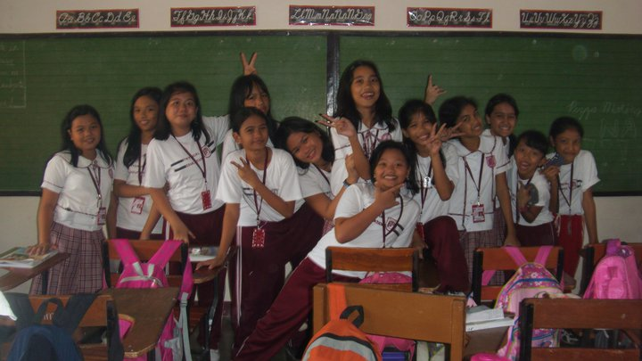
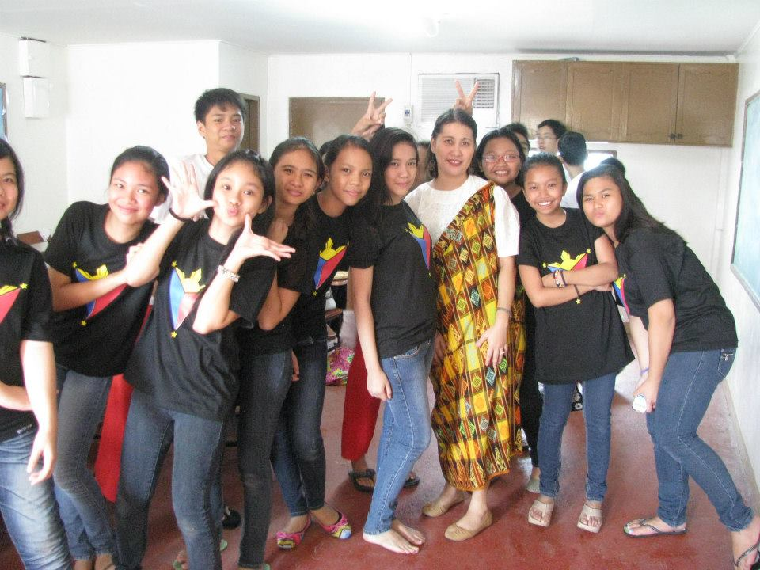
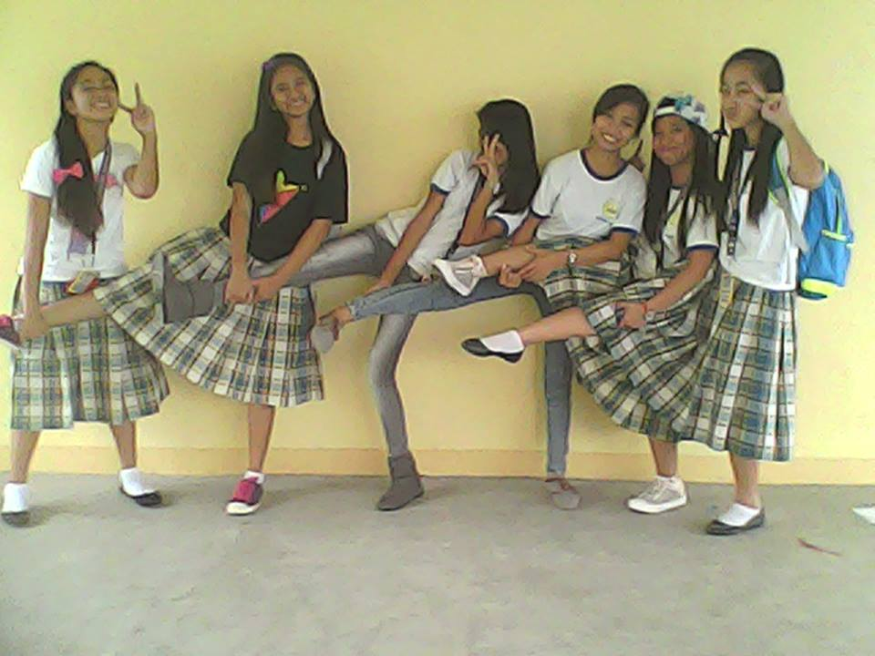
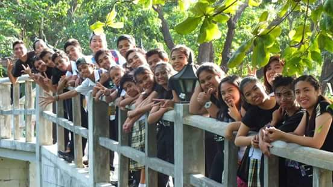

Young Shepherd's School (YSS)
 This picture is taken in our classroom when I was in Grade 6 at Young Shepherd's School which is a private school located at Bacoor. I studied there for 5 years from Grade 4- 2nd year high school.
I remember that we were just practicing for a song that we're going to sing for graduation when we took this picture that is why we have lots of free time already because we're done with school works.
Our section is called Issachar while the other section is
Benjamin. Our section has a close bond and we're also close with the other section because they rumbled the section
when we were Grade 5 and then they rumbled it again when we were Grade 6.

This picture was taken during my last year in YSS.
Our school was celebrating Buwan ng Wika and we joined a competition called Sabayang Pagbigkas
There were two leaders for this competition, Nea (2nd girl from the right) and I. We were the ones who taught our classmates the steps
and proper execution of the piece.
There were only 2 sections competing so it's either win or lose
for us and our competitor. For a fact, Nea and I are very competitive people so we really did our best to make our
performance a perfect one but because of that, we almost didn't complete the piece because we almost ran out of time.
We were wrong in our approach because we tried to polish every part of the performance first before we complete it so
the ending part of our piece was rushed but fortunately, our section still won. Dasmariñas East National High School (DENHS)  As you can see in the picure, I'm wearing a
t-shirt, skirt then a rubber shoes. When I was still in private, it was my dream to be able to wear my uniform in this way
because in private, we were strictly not allowed to wear our uniform in any kind of way other than the prescribed uniform. We need to wear blouse and black shoes. So it's
actually a dream come true for me to be able to wear my uniform like this. 
This picture is taken at the bridge of DLSU-D Lake when I was in
4th year high school. We joined a speech choir interschool competition and managed to bag the 1st runner up title.
The piece that we performed is "If I Were A Voice". I really enjoyed our practice and performance because I really
like this type of competition. What I
like about this kind of performances is we become one when we perform. Our bond also gets tighter as our practice
goes on. Based on personal experience, it's much nicer to win an award as a group instead of winning it by yourself.
This is just one of the many unforgettable experiences I've had
with my favorie section, Gold. I'm happy to say that even though we're not together anymore, we still continue to make
unforgettable experiences.
This photo was taken outside our classroom when we
were in 4th year high school at Dasmariñas East NHS located at Dasma. I transferred there on my 3rd year in high school.
I was placed in the 1st section because my average is higher than 85 which is a requirement for one to be placed in the 1st section.